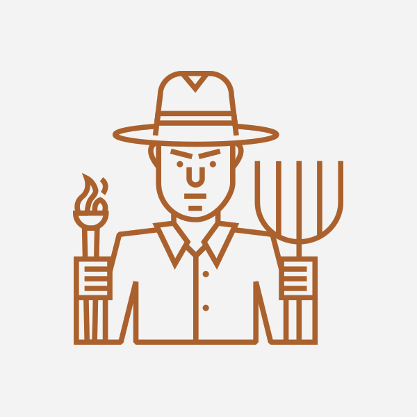

Character Roles

The Villagers
The most commonplace role, a simple Villager, spends the game trying to root out who they believe the werewolves (and other villagers) are. While they do not need to lie, the role requires players to keenly sense and point out the flaws or mistakes of their fellow players. Someone is speaking too much? Could mean they're a werewolf. Someone isn't speaking enough? Could mean the same thing. It all depends on the people you're playing with, and how well you know them.
The Werewolves
Typically werewolves are outnumbered by villagers 2 to 1. So a game of 6 players would have 2 werewolves. The goal of the werewolves is to decide together on one villager to secretly kill off during the night, while posing as villagers during the day so they're not killed off themselves. One by one they'll kill off villagers and win when there are either the same number of villagers and werewolves left, or all the villagers have died. This role is the hardest of all to maintain, because these players are lying for the duration of the game.
The Seer
The Seer, while first and foremost a villager, has the added ability to "see" who the werewolves are once night falls. When called awake by the Moderator, the Seer can point to any of their fellow players and the Moderator must nod yes or no as to whether or not they are indeed a Werewolf. The Seer can then choose to keep this information a secret during the day, or reveal themselves as the Seer and use the knowledge they gained during the night in their defense or to their advantage during the day. The strategy here is up to you.
The Doctor
Also a villager, the Doctor has the ability to heal themselves or another villager when called awake by the Moderator during the night. Should they heal themselves, then will be safe from being killed by the werewolves, or should they want to prove themselves the Doctor or fear the death of a fellow villager, can opt to heal them instead. Again, the strategy here is up to you.